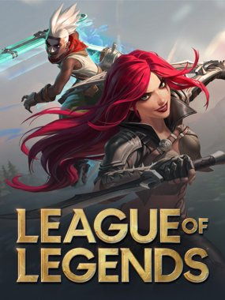
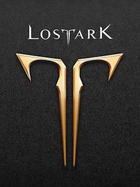
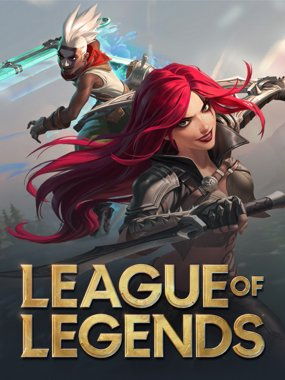
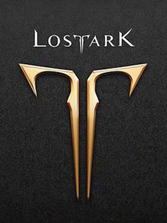

O que vai rolar na live?!
 



Mas a festa não é só minha, é NOSSA! Quero ouvir todas as suas paradas maneiras, suas mensagens de aniversário, suas risadas e todos os momentos épicos que a gente já viveu na Twitch.
Pra fechar, vai rolar uns presentinhos especiais pra galera que estiver l√°, porque voc√™s merecem! üéÅ‚ú®